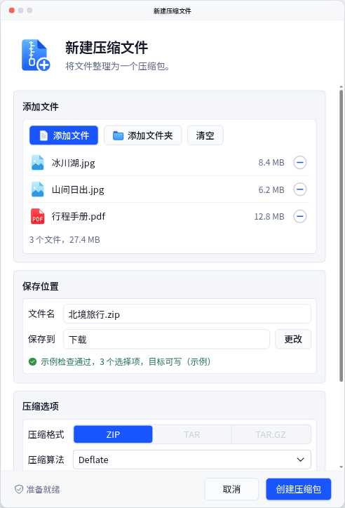
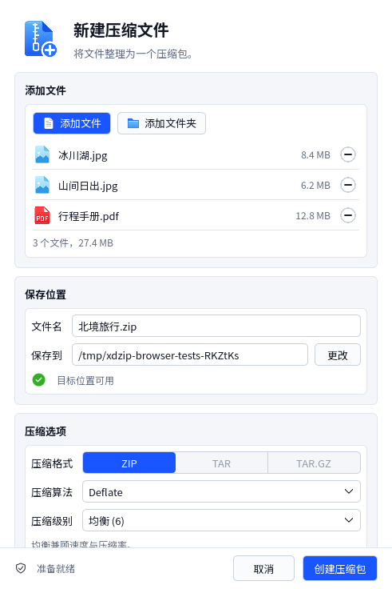

新建压缩文件，控件复核
原稿、HTML 与 Qt 独立展示。当前正常客户区宽 491，正文 13、footer 13、圆角 5。原稿不改写；Qt 为 Linux offscreen／software 的真实客户区截图，原生装饰由目标系统提供。文件夹路径使用临时夹具，HTML 保留示例状态与演示控件。
正常状态
C01 原稿完整历史位图，含原生装饰与旧标识，信息分隔保留原像素。 HTML 设计稿三个文件，真实／示例大小总计 27.4 MB；正文独立滚动，footer 固定。
HTML 设计稿三个文件，真实／示例大小总计 27.4 MB；正文独立滚动，footer 固定。
Qt 实际界面三个文件，真实／示例大小总计 27.4 MB；正文独立滚动，footer 固定。
真实交互状态
几何与行为验证不代表像素完全一致；原图插图、历史文件图标和文字抗锯齿差异单独保留。高 DPR 的短屏使用焦点自动滚动，逻辑控件不放大。